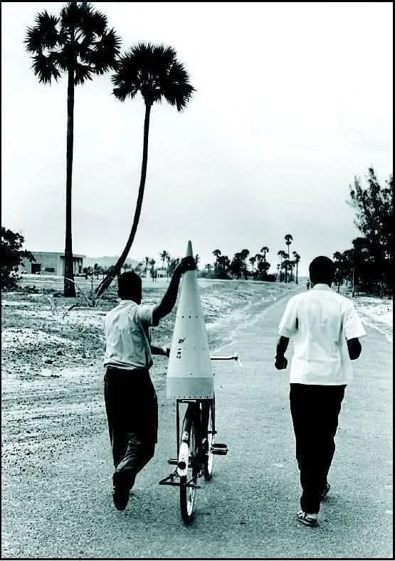

That’s a rocket on a bicycle. Not a photograph from a movie set, not a metaphor. An actual rocket component being transported to an actual launch site in 1963, in a fishing village in Kerala called Thumba. The man holding it is a scientist. The launch pad is a converted cow shed attached to a local church whose congregation had been asked, at Sunday mass, to vacate their homes and place of worship for the nation.
This is what India had to work with. No proper roads to the site, so rocket parts came on bicycles and bullock carts. No facilities of any kind, so scientists cycled daily to the railway station in Thiruvananthapuram for their meals. The night before the launch, the team discovered the payload didn’t fit the nose cone, so a young engineer named A.P.J. Abdul Kalam spent the night manually filing down the components until they did. The hydraulic crane malfunctioned on launch day, so they moved the rocket into position by hand.
At 6:25 PM on November 21, 1963, it flew.
This is how India entered the space age.
This was a country that looked nowhere near ready for a space programme.
In 1963, India had been independent for sixteen years. It had just lost a war with China the previous year. 95% of the population lived on less than ₹458 a year, not monthly, per year. There were barely any highways. Large parts of the country had no electricity. Meanwhile, the Americans and Soviets were spending billions of dollars on space programmes backed by the full military-industrial weight of Cold War superpowers. The USSR had put a man in orbit two years earlier. NASA was two years away from putting men on the moon.
And India had a church, a cow shed, a bicycle, and Vikram Sarabhai.
Sarabhai was the architect of India’s space programme, and what made him significant wasn’t just his vision, it was his strategic clarity. He didn’t try to beat NASA, he didn’t try to run the same race. He looked at what India actually needed: satellites for communication across a massive, disconnected country, remote sensing for agriculture and resources, the ability to eventually stop being dependent on other nations for technology that was going to matter enormously. He started small because small was the only viable option, he started with sounding rockets. But he was never thinking only about the rockets themselves, he was thinking about what they would eventually make possible.
This is a very important point. Sarabhai wasn’t resigned to doing less. He was making a deliberate bet that starting in a race you can win is smarter than entering the race you can’t, especially when the prize you actually care about is long-term capability, not short-term prestige.
It worked. Today ISRO is one of the world’s elite space agencies. India reached Mars on its first attempt, became the first country to land near the Moon’s south pole, built launch vehicles trusted by governments and companies around the world, and did much of it at a fraction of the cost.
ISRO didn’t stay in the “different race” forever. The application-first, constraint-driven early years built something you can’t buy: talent pipelines, institutional knowledge, domain expertise, and a culture of doing more with less that turned out to be an important competitive advantage. They used it as a ramp, and eventually joined the main race on their own terms.
As I read about ISRO’s early years, it felt a lot like where India is with AI right now.
No sovereign compute at scale. A brain drain that sends our best AI researchers to foreign labs and companies. The frontier model race, the one about who builds the most powerful general-purpose AI, is one where the US currently has a commanding lead, China is a serious competitor, and India is nowhere on the scoreboard. On paper, India is completely outmatched, and the gap in raw resources is, if anything, larger than the gap was in 1963.
But India, I think, has its own magnetic equator.
Sarabhai chose Thumba because it sat on the geomagnetic equator, a scientific advantage you couldn’t buy or build elsewhere. India had it and nobody else did. India’s AI equivalent is similar: not its population size, not its ambitions, but the specific engineering constraints its problems impose on anyone trying to solve them.
Building AI that actually works in India means solving things that are incredibly hard: running capable models on cheap, low-power hardware because cloud inference costs money people don’t have. Building multilingual systems across languages that have a fraction of the training data that English does. Designing for intermittent connectivity and unreliable infrastructure. Making systems robust in messy, low-quality data environments that look nothing like the clean benchmarks Western labs optimise for. Building human-in-the-loop workflows for contexts where the AI is assisting a semi-literate healthcare worker, not a knowledge worker in San Francisco. Getting inference cheap enough that it can run at population scale without a hyperscale budget.
These are not easy problems. They are also, increasingly, the problems that matter everywhere. As AI moves off data centers and onto devices, into hospitals, into governments, into the physical world, the engineering challenges start looking a lot more like India’s constraints than like OpenAI’s or Anthropic’s. The country that builds the best AI for hard deployment environments doesn’t just serve its own population, it builds the capability stack that the rest of the world is going to need next.
Silicon Valley is not working seriously on most of this, not because it’s impossible, but because there’s no short-term revenue in optimising for constraints you don’t have. But India’s constraints may turn out to be its magnetic equator.
However, there’s a fair objection here. The researchers who want to work on AGI, who want to be in the room where the next paradigm shift happens, are probably not gonna stay to build agricultural apps no matter how noble the mission. That’s something we have to acknowledge. But India doesn’t need to retain every elite researcher immediately. It needs to retain enough of them, working on problems that are genuinely hard, that when the national-level frontier investment eventually happens there’s an ecosystem to plug into rather than a vacuum. ISRO didn’t keep every Indian physicist from going to MIT. It kept enough of the right people that when the time came to do bigger things, there was someone to do them.
There’s another angle worth considering. Recent polling shows that Americans now view AI more negatively than ICE, most politicians, and even the major political parties. Only a small minority believe it will have a positive impact on the country over the next decade, while far more expect it to make things worse. AI has already developed a trust problem with a large part of the American public.
Not all of this skepticism is irrational: job displacement anxiety, artist exploitation, deepfakes are real concerns. But I think a lot of it is sequencing. AI in the West arrived largely as a productivity and entertainment product optimised for engagement and revenue, and the costs landed on people who had no say in the deployment. The result is a technology that is both ubiquitous and unpopular, which isn’t a good place to be.
To be fair, India has its own trust problems. Misinformation travels fast, digital fraud is rampant, and the history of large-scale technology deployments by the state is complicated. None of that vanishes because the technology is different. But India also has a choice about sequencing that the West didn’t make. If India’s first real encounter with AI is a farmer finally getting reliable information about his crops, or a student getting a tutor they couldn’t afford, that’s a different introduction entirely. One that could make AI relatively more well received by the public. This, however, is not guaranteed. It requires actually building for those contexts rather than just claiming to. But the opportunity is there, and the West largely didn’t take it.
None of this is an argument that India should be content with applications forever. That would be a mistake, and I will not sugarcoat it. AI is not like most previous technologies. It is going to affect almost every major part of society: governance, defense, education, healthcare, economic policy and more. A country that can only consume AI built by others is not fully sovereign in any domain that matters. If India spends the next twenty years building great AI applications on top of American models, it will have built an enormous dependency into the foundation of its most critical systems.
The honest version of the ISRO parallel is that ISRO didn’t stay in the “different race” forever, and India’s AI story shouldn’t either. The application-first phase is Phase 1, not the whole plan. What it buys you is time, talent, data, institutional learning, and public trust, the ingredients you need before good frontier work is possible. But Phase 2 requires deliberate national investment in compute, in research infrastructure, in keeping the best people here. That’s not something that’ll happen automatically. It requires someone making the Sarabhai bet at the national level.
The shortage of compute is a huge problem, and the gap is far larger than what India faced during the early space program. Frontier AI today isn’t just a brain-intensive problem. It’s hyperscale infrastructure, semiconductor supply chains, energy systems, datacenter engineering, and capital concentration at a scale that makes the Cold War space race look manageable. The minimum viable entry ticket to build and train frontier models may already be so large that no amount of application-layer success automatically gets you there. There could be a version of this story where India builds excellent applied AI for a generation and still ends up permanently dependent on American or Chinese foundation models for the underlying capability. That possibility cannot be ignored.
What I’d argue, and this is a bet, not a certainty, is that the application-first phase is still the right Phase 1, because the alternative is worse. Trying to compete at the frontier right now, without the ecosystem, the talent density, or the institutional infrastructure, would be the equivalent of India trying to build a moon rocket in 1963 instead of a sounding rocket. It would fail, and it would fail expensively. The sequence matters. You build the case for the massive national investment that frontier work eventually requires by demonstrating, concretely, that Indian AI can do things that matter. You build it by making AI something people here want rather than fear. You build it the way ISRO built it: one unglamorous, useful, well-aimed thing at a time, until the cow shed is a space centre and the bicycle is a rocket.
Every country that ever built something improbable started from a position that looked, from the outside, like it couldn’t be done. The conditions in 1963 were not secretly favorable. They were genuinely terrible. That’s the whole point of the story. Not that India got lucky, but that Sarabhai looked at terrible conditions and found a different question to ask. He didn’t ask how to close the gap, he asked what India could do that nobody else was going to.
India’s AI generation needs to ask the same question. Nobody gave India permission to reach space in 1963. Nobody’s giving India permission now either. That’s fine. ISRO didn’t ask.